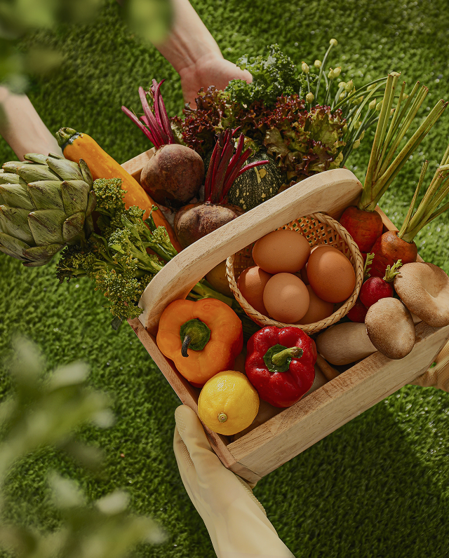
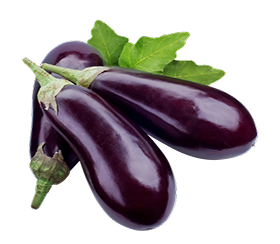
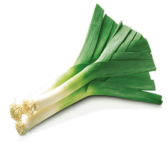
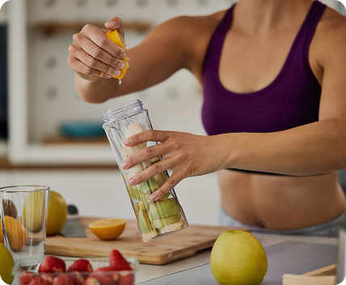

organic vegetables to your diet today!
Our expertly curated vegetable baskets are made with the freshest, highest quality vegetables available. Fresh Harvest Box has got you covered. Fresh, high-quality vegetables in expertly curated vegetable baskets delivered to you.
To order your vegetable basket, simply follow these easy steps
Our baskets are assembled with care and delivered straight to your doorstep, so you can enjoy the taste of fresh fruit without ever leaving your home.
- Just choose the vegetable you want to order by clicking on the checkboxes next to it.
- Click on the basket and fill out the form.
- Sit back and relax! Your fresh vegetables basket will be delivered.
Discount up to 40%! Taste the vitamins and keep your health
organic vegetables
Our organic vegetables are hand-picked from local farms and delivered straight to your doorstep, ensuring that you get the freshest and most nutritious produce possible.
-
eggplant
60 USD / kg
 -
leek
50 USD / kg
 -
mushrooms
40 USD / kg
-
corn
60 USD / kg
-
sweet potatoes
50 USD / kg

-
carrot
40 USD / kg
reviews from our customers
Words of our customers: impressions and opinions about the quality of our services and the freshness of our products.
-
John Wax
These vegetables are my secret to delicious and healthy meals. The quality is always at the highest level, the aroma and taste are enchanting. I advise every fan of real products!
-
Victoria Romashenko
I love how fast and fresh the vegetables are delivered. Salads always turn out so appetizing, and soups are real masterpieces. The quality is impeccable!
-
Ihor Trachuk
Recently tried my fresh tomatoes and peppers - amazing! The authenticity of the taste, as if from the garden directly to my table. It is now my main vegetable supplier.
Ordering from us is quick and easy! Fill out the form below and we will contact you !
Follow us on our social networks: